Seu Mac, nítido onde for
Vídeo em cores plenas e uma tela sob medida, no iPad, iPhone e iPhone Duo. Como se você estivesse sentado na frente do seu Mac.
4,99 €, pagamento único. Sem conta, sem anúncios.
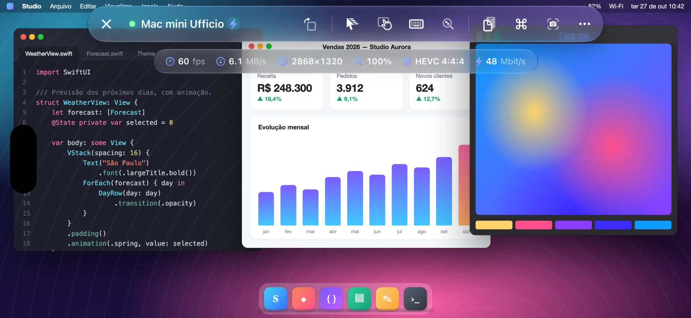
- 60 fps
- HEVC 4:4:4
- Retina
Como funciona
O Open Remote PRO se conecta ao Compartilhamento de Tela integrado ao macOS, o mesmo usado pelo Apple Remote Desktop.
- Você não instala nada no Mac
- Não precisa criar conta
- Nenhum dado passa por servidores de terceiros
Cores plenas, fluido a 60 fps
Vídeo HEVC 4:4:4 em cores plenas, decodificado por hardware: texto nítido como na tela do Mac, degradês e fotos sem halos. Role, arraste janelas, assista a um vídeo: fluido até 60 fps, com baixa latência.
Se o Mac não oferecer o modo de vídeo, o app passa sozinho para as codificações VNC clássicas.
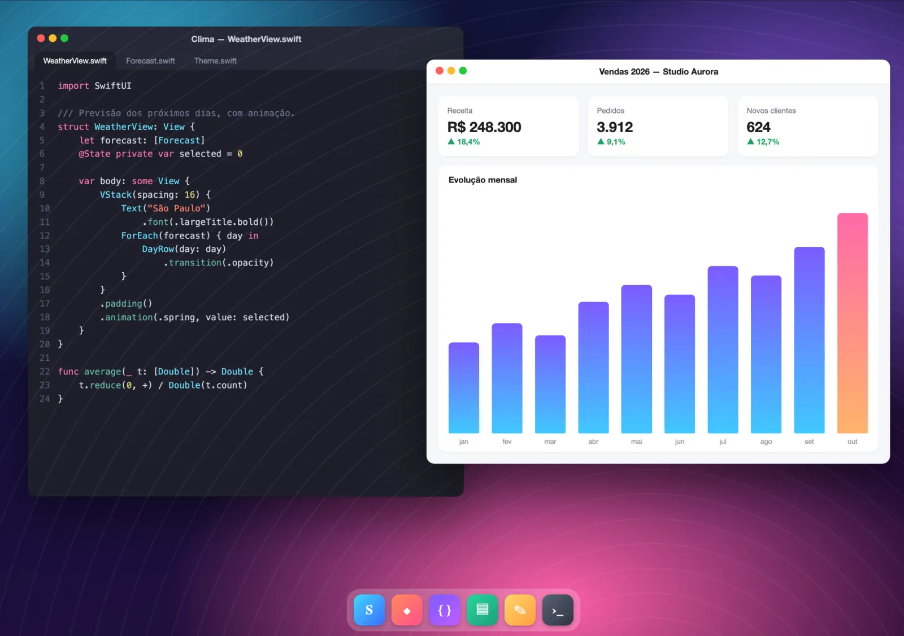
A tela se adapta a você
O Mac cria um monitor virtual Retina exatamente do tamanho da sua tela: sem faixas pretas, sem texto minúsculo. Gire o dispositivo, use Split View ou Stage Manager, abra o iPhone Duo: o monitor se redimensiona sozinho.
- Com o teclado aberto, você escolhe: deslize dois dedos para ver a parte coberta ou reduza a tela do Mac à área visível.
- No iPhone, um botão gira a tela mesmo com o bloqueio de rotação ativado.
- Mac com vários monitores: alterne com um toque ou veja todos ao mesmo tempo.
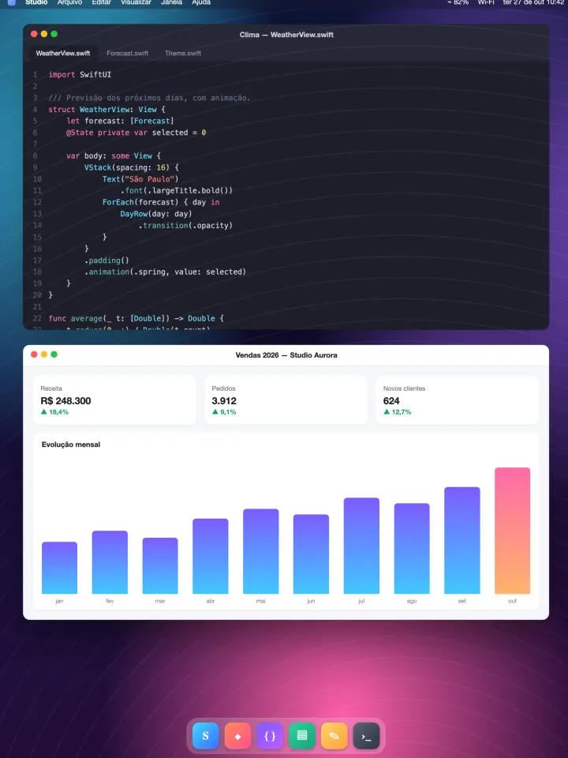
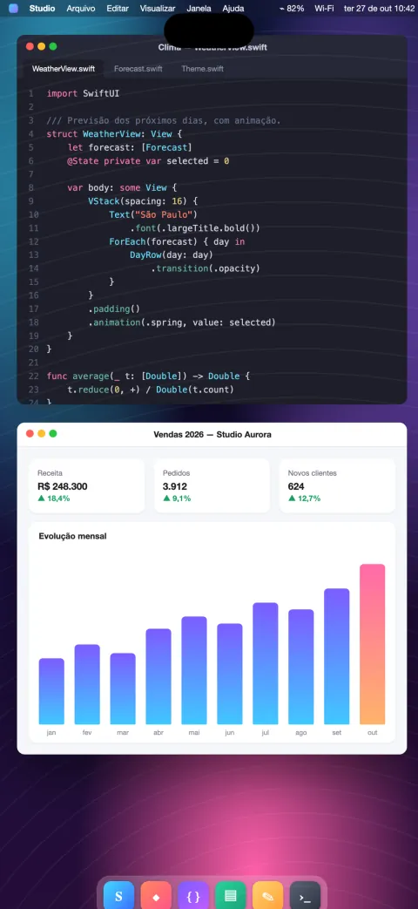
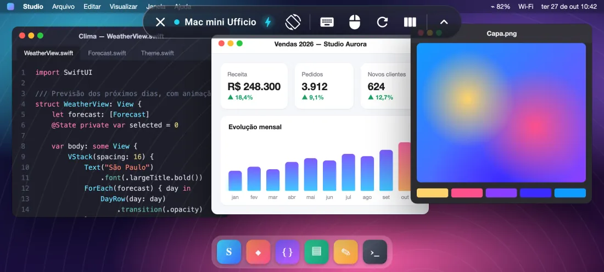
Otimizado para iPhone Duo
Abra o telefone e a tela do Mac cresce junto; feche e ela se ajusta à tela externa.
Fechado, o Mac se ajusta à tela externa. Aberto, vira uma verdadeira mesa de 7,6 polegadas, com o espaço de um notebook.
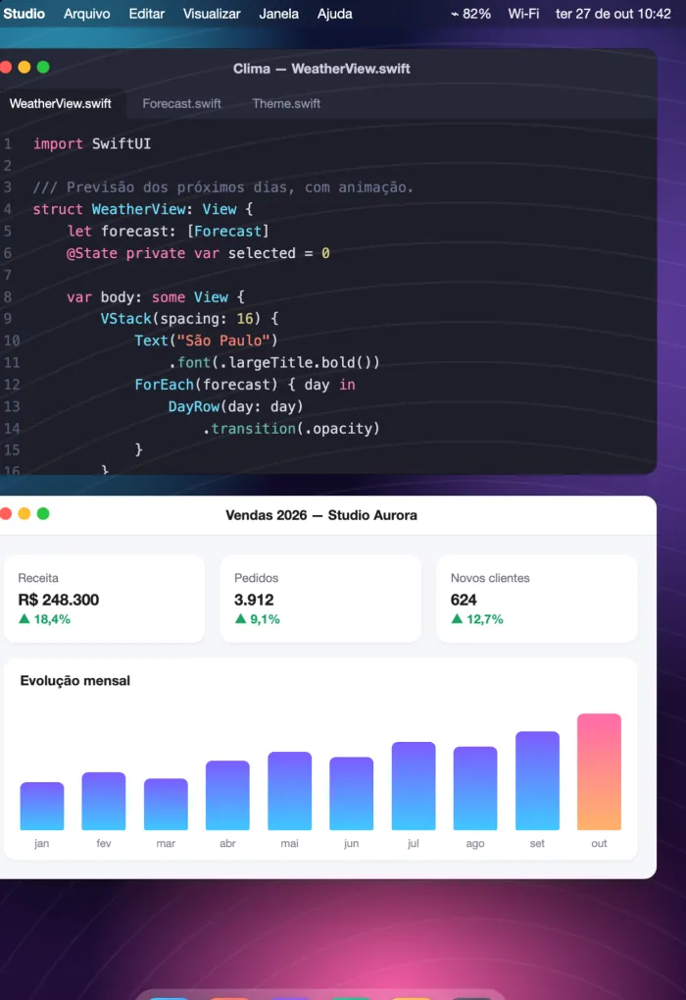
- O monitor virtual do Mac muda de tamanho no instante em que você abre ou fecha o telefone: sem reconectar, sem faixas pretas.
- A barra de controles se reorganiza sozinha entre a tela externa e a interna.
- Botão para girar a tela e sugestão de rotação quando você vira o telefone.
Seus Macs num só olhar
Pensado para quem gerencia vários Macs, em casa, no estúdio ou no escritório.
- Usa o Apple Remote Desktop? Importe num instante a lista de computadores exportada do Remote Desktop.
- Cartões com a última imagem de cada Mac e o status em tempo real: disponível ou inacessível.
- Descoberta automática dos Macs na rede local e conexão rápida por endereço.
- Gerenciamento remoto via SSH: hardware, sistema e discos, apps instalados, bloqueio de tela, repouso, reinício e desligamento, com verificação da identidade do Mac.
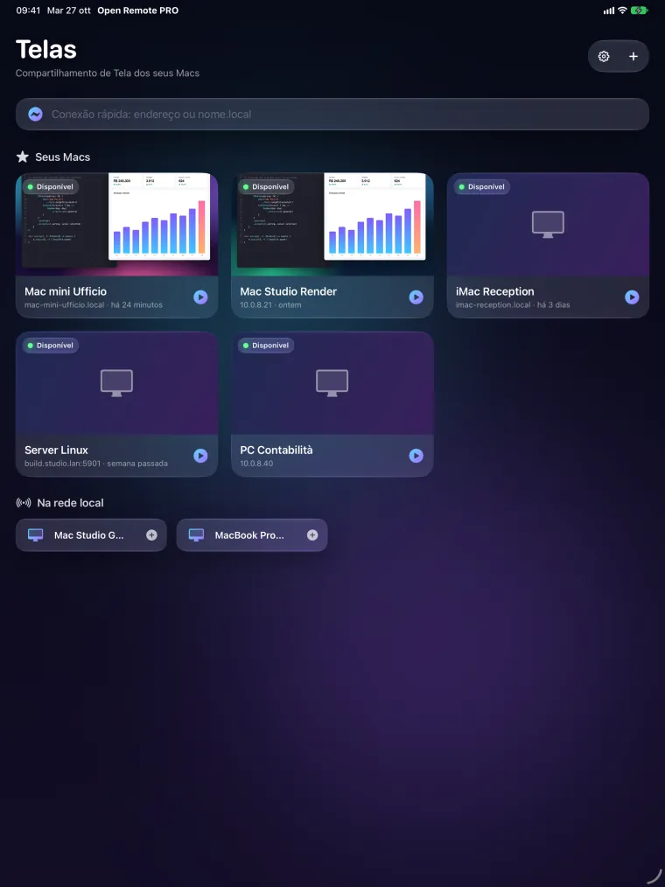
Controle, compatibilidade, privacidade
Controle natural
- Modo trackpad ou toque direto, clique secundário com dois dedos, zoom com os dedos sem trancos.
- Rolagem precisa com inércia; três dedos para rolar páginas.
- Teclado físico ou na tela com o layout certo, até nos campos de senha.
- Barra com esc, tab, setas, F1–F12 e teclas modificadoras; atalhos prontos (Mission Control, Spotlight, instantâneos e mais).
- Área de transferência compartilhada entre o Mac e o seu dispositivo; instantâneos da tela para salvar ou compartilhar.
- Modo Observar para ver sem tocar em nada.
Também PC e Linux
- Servidores VNC padrão no Windows e no Linux.
- PCs com Windows via Área de Trabalho Remota (RDP) no iPad e no iPhone.
Android, em breve no Google Play
No celular, no dobrável e no tablet Android: fluido até 60 fps, até 120 nas telas compatíveis.
Privacidade desde o projeto
- Sem conta, sem anúncios, sem rastreamento.
- Senhas e chaves ficam nas Chaves do seu dispositivo.
- O app se conecta somente aos computadores que você indicar.
Veja como fica
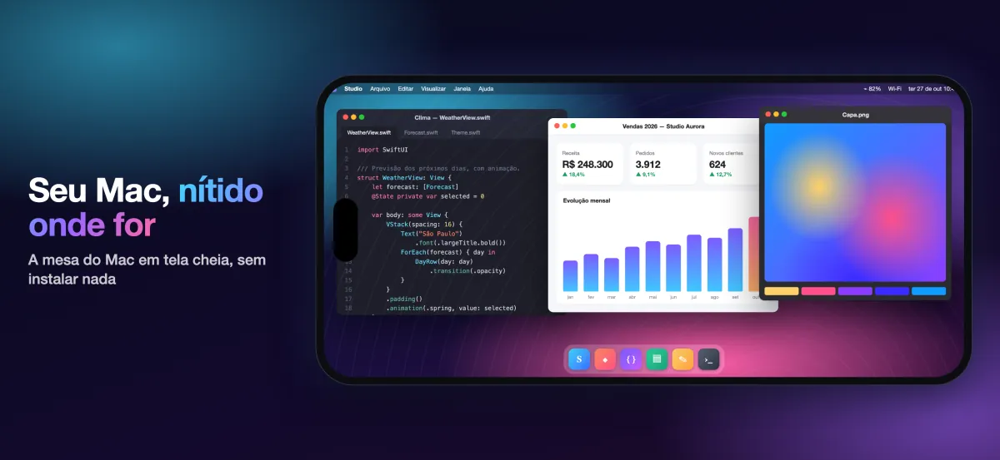
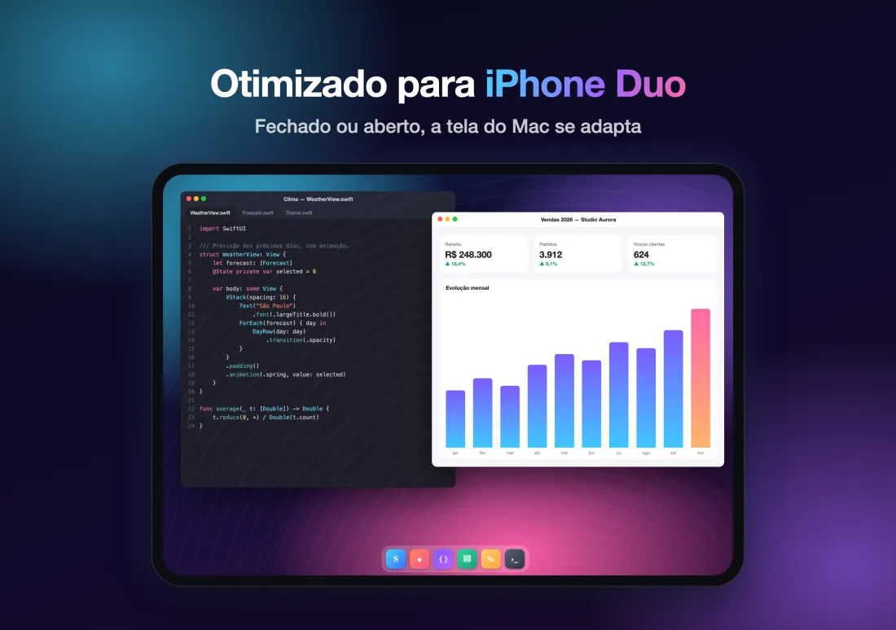
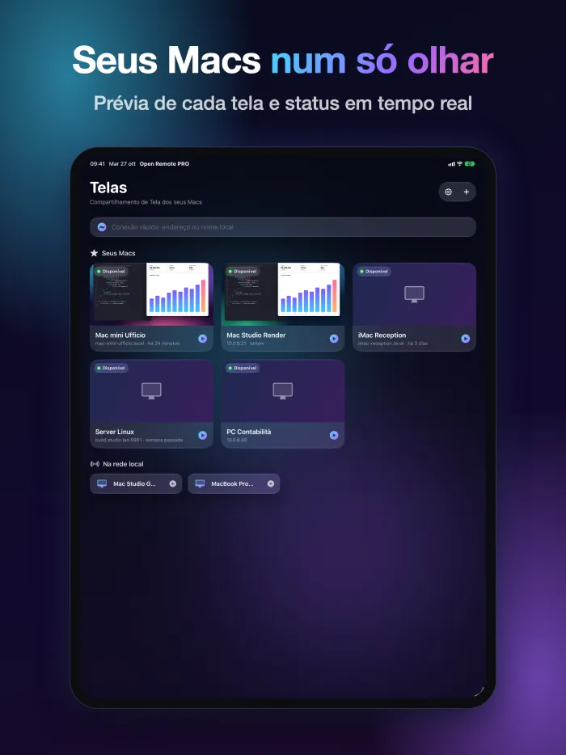
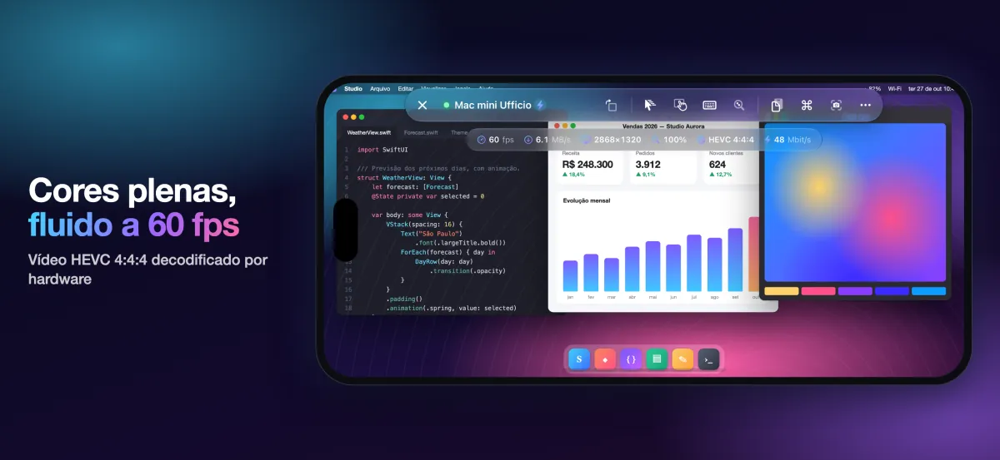
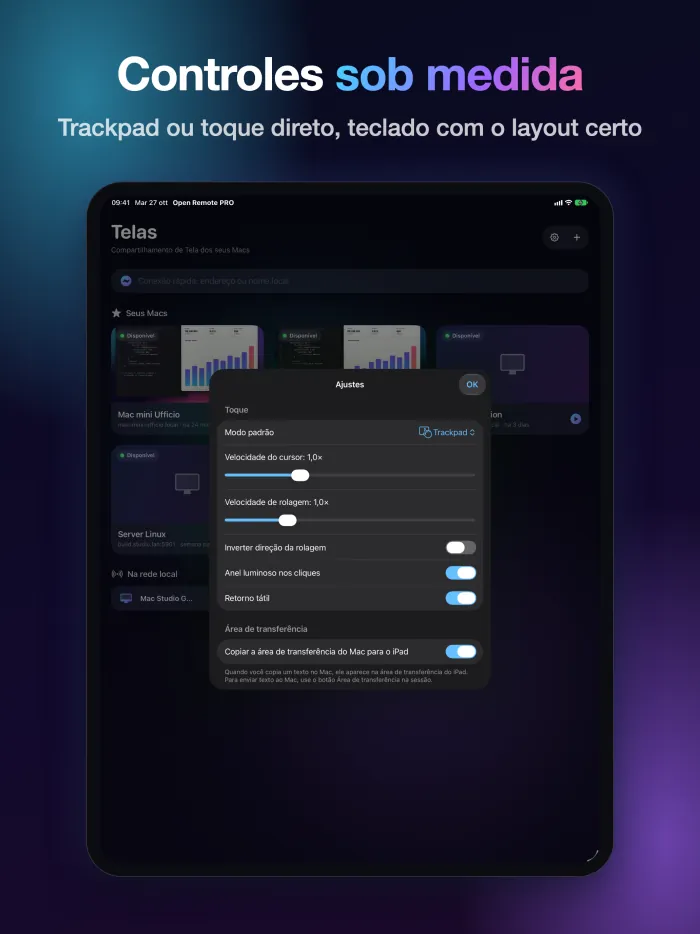
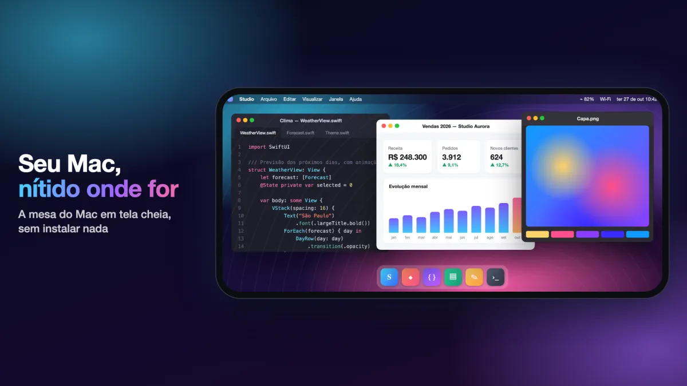
Uma única compra
4,99 €
Você paga uma vez só, na App Store.
Baixe naApp StorePreço nos países do euro; nos demais vale o preço exibido na App Store.
Requisitos
Para o vídeo de alta qualidade, é preciso um Mac com chip da Apple e macOS 14 ou posterior, com o Compartilhamento de Tela ativado (Ajustes do Sistema › Geral › Compartilhamento). Os outros Macs e os servidores VNC funcionam com as codificações clássicas. Fora de casa ou do escritório, use uma VPN.
Perguntas frequentes
O que preciso instalar no Mac?
Nada. No Mac, abra Ajustes do Sistema › Geral › Compartilhamento e ative o Compartilhamento de Tela. Depois adicione o Mac no app (se estiver na mesma rede, ele já aparece na lista) e entre com o nome e a senha de um usuário desse Mac.
O que é preciso para o vídeo de alta qualidade?
Um Mac com chip da Apple e macOS 14 ou posterior. Os outros Macs e os servidores VNC funcionam com as codificações clássicas.
Funciona fora de casa?
Sim, com uma VPN para a rede do Mac. Não exponha o Compartilhamento de Tela diretamente na internet.
Funciona com PCs Windows e Linux?
Sim, com os servidores VNC padrão no Windows e no Linux. No iPad e no iPhone você também se conecta a PCs com Windows via Área de Trabalho Remota (RDP).
Quais dados o app coleta?
Nenhum: sem conta, sem anúncios, sem rastreamento. A lista de computadores, as senhas e as chaves ficam no seu dispositivo, e o app se conecta somente aos computadores que você indicar.
Quando chega ao Android?
O app para Android chega em breve ao Google Play, para celulares, dobráveis e tablets.
Mais respostas na página de suporte (em inglês).